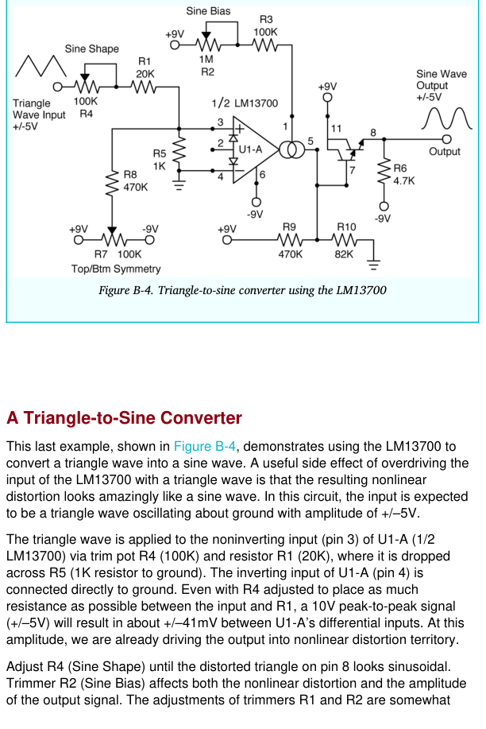

Triangle → sine one OTA
A sine wave is hard to make directly, so most synths make a triangle and bend its corners round. Here a transconductance amplifier (OTA) is deliberately overdriven. Its tanh-shaped transfer curve flattens the triangle's tips into something very close to a sine.

You need
- A solderless breadboard, solid hook-up wire, and the parts below.
- A ±9 V split supply: two 9 V batteries in series, with the joint between them as ground.
- A triangle wave to convert, such as the one from the square + triangle recipe.
- An oscilloscope: you tune this circuit by eye.
Pinout
Build and tune it
- Wire the circuit as drawn. The input is pin 3 (+), pin 4 (−) goes to ground, pin 1 is the bias, pin 5 is the output current, which feeds the buffer at pin 7, and the sine comes out of pin 8.
- Feed in a triangle of about ±5 V (10 V peak to peak), centred on ground.
- With a scope on pin 8, adjust Sine Shape (R4) until the tips round off into a sine.
- Adjust Sine Bias (R2) for amplitude and shape, then Symmetry (R7) until the top and bottom halves match. The trimmers affect each other, so go back and forth a few times.
Using the square + triangle recipe as the source. That recipe's triangle is only about ±2.1 V and its figure uses ±12 V. To run both from one ±9 V supply, change its R1 from 20 kΩ to about 68 kΩ (triangle ≈ ±5 V) and its C from 0.1 µF to 0.033 µF (keeps about 10 Hz–2.4 kHz). These values are worked out from the formula, not taken from the book, and have not been tested. Use the Sine Shape trimmer to take up any difference.
Wilson lists these as drop-in equivalents: onsemi NE5517, JRC NJM13600 / NJM13700, CoolAudio V13700, and TI's LM13600.
References
- Ray Wilson, Make: Analog Synthesizers, Maker Media, 2013. Appendix B, "The LM13700" (Figure B-4).
- Texas Instruments, LM13700 datasheet, which includes more application circuits.
- Further reading on sine shaping: J. Donald Tillman, "An Improved Sine Shaper Circuit", 2020.